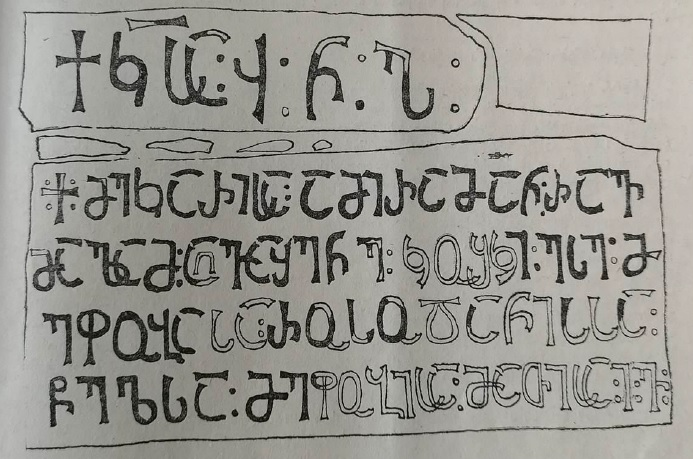

ყარსის ციხის ქართული წარწერა
შინაარსი / Summary
საამშენებლო
ბიბლიოგრაფია Bibliography
კრიტიკული გამოცემა Interpretive Edition
ქ(რონი)კ(ონ)სა ჳნჰ
※ მე კარისა ამირამან რავ -
მალამ ა ღვაშენე კოშკი ესე მ -
ეფობა სა რო(ჳ)სო(ჳ)ასა
5წელსა მეფო ობისა მათისა ივ
დიპლომატიური გამოცემა Diplomatic Edition
ႵႩႱႠ ჃႬჀ
※ ႫႤ ႩႠႰႨႱႠ ႠႫႨႰႠႫႠႬ ႰႠႥ
ႫႠႪႠႫ Ⴀ ႶႥႠႸႤႬႤ ႩႭႸႩႨ ႤႱႤ Ⴋ
ႤႴႭႡႠ ႱႠ ႰႭႱႭႠႱႠ
5ႼႤႪႱႠ ႫႤႴႭ ႭႡႨႱႠ ႫႠႧႨႱႠ ႨႥ

ყარსის ციხის ქართული წარწერა
{'ka': 'ქრონიკონსა 458, ※ მე, კარის ამირა რავმალამ ავაშენე ეს კოშკი რუსუდანის მეფობის მე-16 წელს.'}
{'default': 'წარწერაში განკვეთილობის ნიშნად ყოველი სიტყვის შემდგომ დასმულია ორწერტილი. ქარაგმის ნიშნად გამოყენებულია კიდურწაისრული განივი სწორი ხაზი.\n ყარსის ციხის წარწერის ფრაგმენტული ტექსტი პირველად გამოსცა ვენეციელმა მხითარისტმა ნერსეს სარგისიანმა ჟურნალ „ბაზმავეპში“. ამ ჟურნალში 1863-1864 წწ.\n გამოქვეყნდა მისი „დიდი და მცირე სომხეთის აღწერა“, რომელიც შეიცავს ავტორის მიერ 1843-1853 წწ. მოგზაურობის დროს შეკრებილი მასალების პუბლიკაციას. „აღწერა“\n 1864 წელს გამოქვეყნდა ცალკე წიგნადაც ვენეციაში (Ն. Սարգիսեան, Տեղագրութիւնք ի փոքր եւ ի մեծ Հայս, Վենետիկ, 1864, 103).\n ნერსეს სარგისიანის პუბლიკაციის მიხედვით, ფრაგმენტული წარწერის ქართული ტექსტი ფრანგული თარგმანით 1861 წელს გამოსცა მ. ბროსემ (M. Brosset,\n Inscriptions Géorgiennes et autres recueillies par le Père Nersès Sargisian, MAIS, t. VIII, N10, SPb., 1864, 21). 1881 წლის 23 ივლისს,\n როგორც მისი საველე დღიურიდან ჩანს, წარწერა ადგილზე შეუსწავლია დ. ბაქარაძეს (კ. კეკელიძის სახელობის საქართველოს ხელნაწერთა ეროვნული ცენტრი,\n დ. ბაქრაძის პირადი საარქივო ფონდი, N32, 50v). იმავე წელს მან გამოაქვეყნა ცნობა ყარსის ქართულ წარწერებზე და მათ შორის\n ამ წარწერის შესახებაც, ხოლო თვით წარწერის ტექსტი არ გამოუცია (Д. Бакрадзе, Историко-этнографический очерк Карсской области, ИКОИРГО, т. VIII, 1881, N1 202).\n 1909 წელს წარწერის ფრაგმენტული ტექსტი, მაგრამ ამ დროისათვის არსებულ პუბლიკაციებთან შედარებით მაინც უფრო შევსებული სახით გამოაქვეყნა ე. თაყაიშვილმა\n MAK, XII, 1909, XI). მისივე აღნიშვნით, მან ეს პუბლიკაცია მოამზადა დ. ბაქრაძის დღიურში\n დაცული ტექსტისა და „პოდატნოი ინსპექტორის“ დავით ვასილის ძე ქუთათელაძის მიერ მისთვის გადაცემული წარწერის ტექსტის გადმოწერის მიხედვით.\n ამგვარად, ამჟამად არსებობს წარწერის ტექსტის ოთხი გამოცემა (ნ. სარგისიანისა - 2, მ. ბროსესი და ე. თაყაიშვილის) და ერთი\n გადმონაწერი (დ. ბაქრაძისა). ვალერი სილოგავას გამოცემა ნ. სარგისიანის გამოცემასა და დ. ბაქრაძის გადმოწერას ემყარება. აგრეთვე წარწერის ფოტოს, რომელიც 1875\n წელს ო.ა. ქურქჩიანციმ გადაიღო. ეს ფოტო აღმოჩნდა ს. ჯანაშიას სახელობის საქართველოს სახელმწიფო მუზეუმის ეთნოგრაფიის განყოფილებაში, ებგ. ვეიდენბაუმის კუთვნილი ძველი\n ფოტოსურათების ფონდში. სამწუხაროდ, წარწერა დღეს უკვე აღარ არსებობს.\n იმ ადგილას, სადაც წარწერაში ქრონიკონია გადმოცემული, ჳ:ნ:ჰ:, ჰ-ში ნაგულისხმევია ჱ (780+458=1238). მსგავსი შემთხვევები სხვა წარწერებში დასტურდება,\n მაგალითად, ანისის 1218 წლის წარწერაში, რომელიც წარმოადგენს ეტიფანე კათალიკოსის განჩინებას ანისის მრევლისადმი\n (Н.Я. Марр, Надпись Епифания, католикоса Грузии, ИИАН, 1910, N17, 1433-1442) და შაჰნავაზის 1670 წლის ჭედურ წარწერაში ოქონის\n ჯვარცმის ხატის ბუდის კარებზე (MAK, XII, 1909, 130). ბოლო სტრიქონზე ვალერი სილოგავამ აღადგინა რიცხვი ივ (16),\n რაც გულისხმობს რუსუდანის მეფობის მე-16 წელს. წარწერის პირველი სტრიქონიდან ვიცით, რომ კოშკი\n ამირამ აღაშენა 1238 წელს. ცნობილია, რომ რუსუდანი გამეფდა 1222 წელს გიორგი ლაშას გარდაცვალებისათანავე.\n მაშასადამე, თუ რუსუდანი 1222 წელს გამეფდა, 1238 წელს იქნებოდა მისი მეფობის ივ (მე-16) წელი.'}
<div type="edition" xml:lang="ka" ana="mtavruli" xml:space="preserve">
<ab>
<lb n="1"/><w lemma="ქრისტე"><expan><abbr>ქ</abbr><ex>რისტ</ex><abbr>ე</abbr></expan></w>
<w lemma="განსუენება"><expan><abbr>გა</abbr><ex>ნ</ex><abbr>ო</abbr><ex>ჳ</ex><abbr>ს</abbr><ex>უ</ex><abbr>ენე</abbr></expan></w>
<w lemma="სულ">სოჳ<lb n="2" break="no"/>ლსა</w>
<name nymRef="ვაჩა">ვაჩაჲს<lb n="3" break="no"/>ასა</name>
<name nymRef="გურა"><expan><abbr>გო</abbr><ex>ჳ</ex><abbr>რაჲ<lb n="4" break="no"/>სასა</abbr></expan></name>
<name nymRef="მირა"><expan><abbr>მ</abbr><ex>ი</ex><abbr>რა</abbr><ex>ჲ</ex><abbr>ს</abbr><ex>ა</ex><abbr>ს</abbr><ex>ა</ex></expan></name>
</ab>
</div>